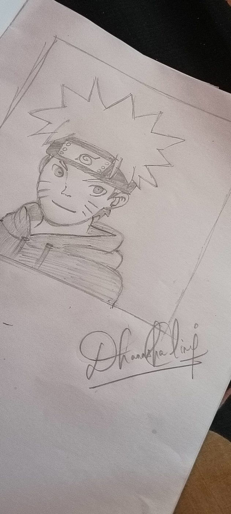

LAND / WATER · SEGMENTATION
CNN + U-NET
COMPUTER VISION
AI GIS — Land & Water Detection
Satellite-image segmentation with preprocessing, model training, FastAPI deployment and explainability.
DHANASHALINI S · SOFTWARE ENGINEER
I combine visual precision with software engineering and applied AI — from image enhancement and computer vision to production-ready developer platforms.
Each project is presented as a visual artifact — not just a list of technologies.
Satellite-image segmentation with preprocessing, model training, FastAPI deployment and explainability.
Image enhancement concepts: tone, detail, noise, sharpness and composition.
Interpreting model outputs with feature importance and visual explanation workflows.
Signal-processing concept using FFT, RMS, spectral features and explainable fault analysis.
Live public repositories are pulled from dhanashalini25. Select any project to open its digital project card.
Original artwork created by me — showing the complete visual journey from hand-drawn construction to ink, color and final digital rendering.

Freehand construction, proportions and line development.
Clean ink linework with a hand-colored finish.
Lighting, texture, depth and final rendering rebuilt digitally.
Image preprocessing · segmentation · CNN · U-Net · feature extraction · image quality analysis
PyTorch · TensorFlow · scikit-learn · SHAP · LIME · Grad-CAM · feature engineering
Python · TypeScript · Node.js · FastAPI · REST APIs · PostgreSQL · Redis · Docker
React · Next.js · Tailwind CSS · HTML5 · CSS3 · responsive UI · interaction design
I’m Dhanashalini S, a Software Engineer with a B.Tech in Information Technology. I build backend and applied-AI systems in Python, TypeScript and Node.js, while bringing a strong interest in digital image processing and computer vision.
At Truerize IQ Strategic Solutions Pvt. Ltd., I worked on computer-vision and agro-based machine-learning workflows, including semantic segmentation, feature extraction, model deployment and explainability.